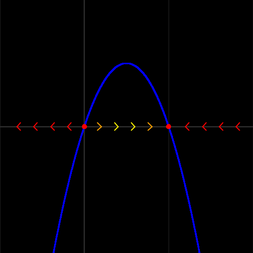
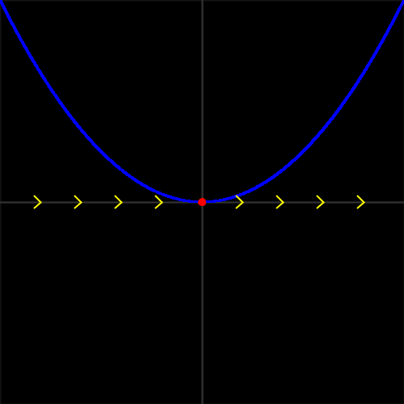

Classification Of Fixed Points
For the purposes of this article, the ODEs being considered are of the form $\dot{x} = f(x)$, where $f(x)$ is some function. A point $x^*$ is said to be a fixed point if $f(x^*) = 0$.
Fixed points can be classified depending on their behaviour. The two fundamental types of fixed points (for first-order ODEs) are stable and unstable (these carry over to higher order ODEs, but there are additional classifications). Stable fixed points are points towards which particles will "flow" (tend to), whereas unstable fixed points are points away from which particles flow (here, particle refers to an object whose position varies according to the ODE in time).
To demonstrate what is meant by these, consider the ODE $\dot{x} = x (1 - x)$. The fixed points are at $x = 0$ and $x = 1$. The following graph plots $\dot{x}$ against $x$.
The arrows represent the direction of flow. Clearly, particles around the left fixed point ($x=0$) flow away from it, making $x=0$ an unstable fixed point. In contrast, particles around the right fixed point ($x=1$) flow towards the fixed point (it is stable). In other words, for a fixed point $x^*$, $f(x)$ must be positive immediately to the right, negative immediately to the left to be stable, negative immediately to the left, and positive immediately to the right to be unstable.
There is an additional type of fixed point (although generally less common than the other two) in the form of "semi-stable". For a point to be semi-stable, $f(x)$ must have the same sign immediately to the left and immediately to the right. If both are positive, it is increasing; if both are negative, it is decreasing. This occurs when $f$ only touches the $x$-axis (such as in the case of repeated roots in a polynomial). Consider $\dot{x} = x^2$.
Determining The Nature Of Fixed Points
Determining whether a fixed point is stable or unstable (or semi-stable) with a graph is simple, however, this is not always possible. In such cases, it is useful to be able to determine the nature of the fixed point by calculation.
This method involves taking the derivative of $f(x)$. If $f'(x^*) < 0$ then the fixed point is stable (where $x^*$ is the fixed point). The fixed point is unstable if $f'(x^*) > 0$. Finally, the fixed point is semi-stable if $f'(x^*) = 0$.
Proving this fact is more difficult. Let $x^*$ be the fixed point in question. Consider a point close to $x^*$, $x_\epsilon(t) = x^* + \epsilon(t)$ for some small $\epsilon$. Evaluating the derivative at this point, $\dot{x}|_{x_\epsilon} = f(x_\epsilon)$. This can be calculated by Taylor expanding around the fixed point, $\dot{x}|_{x_\epsilon} = f(x^*) + [x_{\epsilon} - x^*] f'(x^*) + \frac{1}{2}[x_{\epsilon} - x^*]^2 f''(x^*) + ...$.
This can be simplified by assuming that all terms of order $>1$ are negligible (this is not always true, but we will return to this case later). Further, since $x^*$ is a fixed point, $f(x^*)=0$ by definition. Substituting this all into our equation, $\dot{x}|_{x_\epsilon} \approx [x_\epsilon - x^*] f'(x^*)$. For clarity, we can rewrite this as $\frac{dx}{dt}|_{x_{\epsilon}} \approx [x_\epsilon - x^*] f'(x^*)$. We can separate the variables, giving $\int \frac{1}{x_{\epsilon} - x^*} dx \approx \int f'(x^*) dt$. Note that $f'(x^*)$ is a constant, and thus $\ln{|x_{\epsilon} - x^*|} \approx f'(x^*)t + C$, where $C$ is the constant of integration. Raising $e$ to the power of both sides gives $x_{\epsilon} - x^* \approx A e^{f'(x^*)t}$ (where $A$ is a constant), which is an equation approximating the difference of a particle near a fixed point from the fixed point, $x_{\epsilon}(t)$, as a function of time. By analysing this equation, we can make statements about the flow of particles near the fixed points.
If $f'(x^*) > 0$, then the difference will grow exponentially. As $t \rightarrow \infty$, the difference will diverge to positive or negative infinity (depending on $A$), which is what would be expected of an unstable fixed point. If $f'(x^*) < 0$, the difference will tend to zero as $t \rightarrow \infty$, which is the nature of a stable fixed point. As stated earlier, if $f'(x^*) = 0$, the higher-order terms are not negligible, and thus the approximation cannot be used to make any statements about the nature of the fixed point.
When $f'(x^*) = 0$, $f(x)$ is tangent to the $x$-axis as $x^*$, and so we can clearly see that it is semi-stable.
Using the example from before, $\dot{x} = x (1 - x) = f(x)$, we can see that $f'(x) = 1 - 2x$. Evaluating this at the fixed points gives $f'(0) = 1$ and $f'(1) = -1$. Using our method of determining the nature of the fixed points, since $f'(0) > 0$, the fixed point $x=0$ is unstable, whereas the fixed point $x=1$ is stable (since $f'(1) < 0$), lining up with what we observed from the graph.
Going back to the other example, $\dot{x} = x^2$, we can see that $f'(x) = 2x$. The fixed point at $x=0$ is thus semi-stable since $f'(0) = 0$, although this method does not tell us whether it is increasing or decreasing.
Links
To download this webpage as a pdf, click here.